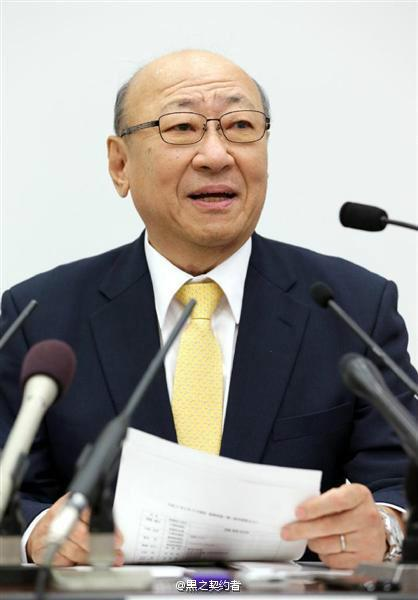

 君岛达己，1950年生于东京，毕业于一桥大学法学部，任天堂社长。君岛达己被山内溥说服来到任天堂，曾任宝可梦公司董事长，2002年出任任天堂美国董事后担任CEO。2013年受岩田聪提拔担任任天堂常委董事、经营统括本部长兼总务本部长。君岛性格圆融友好， 在WiiU发卖时，曾发表“和Wii太相似会失败”的言论。
君岛达己表示，将继承岩田聪社长的基本方针和战略，开拓家用机市场。 君岛氏虽然在公众面前亮相有限，但从他对于WiiU销售不振的原因分析和对于次世代主机NS的展望等寥寥数语可以看出对于任天堂经营业务得失有着清醒的认识。
2018年6月28日，君岛达己的取缔役（董事）任期将满，卸任代表取缔役社长一职。之后君岛达己担任公司顾问。
君岛达己生于1950年，出生地东京，毕业于一桥大学法学部。1998年株式会社三和银行新桥支店长。上世纪90年代中期担任任天堂的市场投资顾问期间，在君岛的推荐下，任天堂采取捆绑美元汇率结算的财务体制。使得该社在之后的数年规避日元兑换美元汇率波动所造成的经营风险，获得可观的“为替差益”（汇兑收益）。
2002年春山内溥宣布退任，社内形成新的三驾马车体制。 [6] 君岛达己得以位列其中则在于其专业的财务管控能力和海外任职经验，山内溥希望能藉此弥补岩田聪经营能力的短板。
君岛达己曾任宝可梦公司董事长，在2002年出任任天堂美国（Nintendo of America Inc.）董事，后担任CEO。2013年担任任天堂常委董事、经营统括本部长兼总务本部长，2014年开始兼任人事本部长。
自前任任天堂社长岩田聪去世已过去2个月时间，而日前任天堂公司终于公开了新的人事变动情报，从2015年9月16日开始由君岛达己担任任天堂新社长。君岛达己之前曾经担任美国任天堂的CEO，并且在在日本任天堂总部曾经任职过经营统括本部长、总务本部长和人事本部担当。